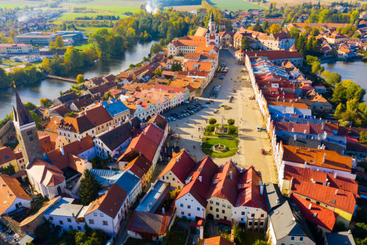

Látnivalók

Budapesti Parlament
A Parlament épülete Budapest szimbóluma, és az egyik legszebb parlamenti épület a világon.

Buda Vár
A Buda Vár a történelem fontos helyszíne, ahonnan csodálatos kilátás nyílik Budapestre.

Szentendre
Szentendre a festői kisváros Budapest közelében, híres művészeti galériáiról és csodás utcáiról.